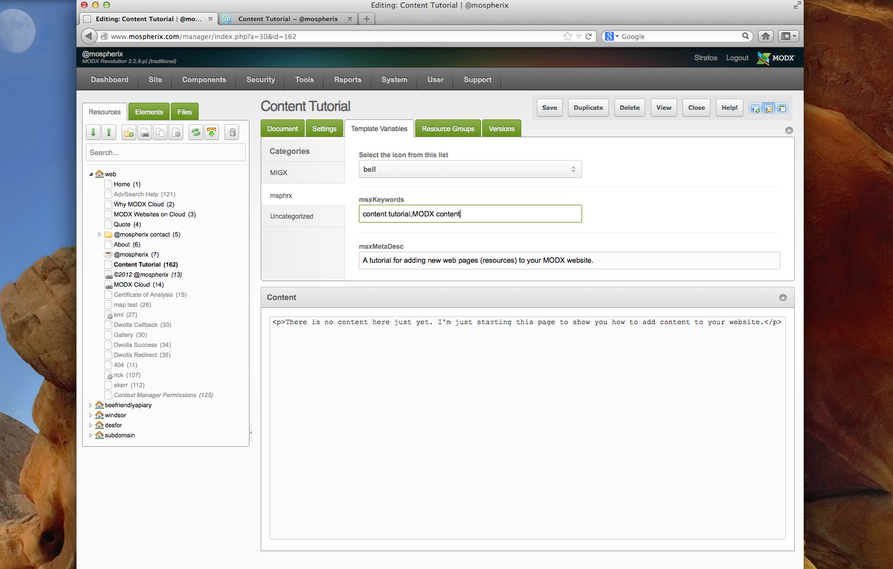

Adding pages or Blog entries to your MODX website is really easy once you get comfortable with the various steps. This is part 1 of 3. After Part 1 you'll be able to manage 87.43% of your website content needs. The other 12.57% are customizations for Parts 2 and 3.
One, right click on your "context" and and select "Create a Document Here".
Two, fill out the fields. Title* will show up in the Resource Tree on the left. Long Title will show up on your new web page. You can leave the Resource Alias (web address or URL) blank as MODX will automatically create it for you.
Three, fill out the Template Variables (TV). TVs are what customizes your page. In my case I need to give it an icon for the menu. I started with a bell, but changed it to a bullhorn.
The important TV is the meta description TV will will greatly help search find your page, and importantly determine if your page really is what the meta description tag says it is.

Four, Upload any images you might have. You might be able to see all of the directories (folder) on the server that I can.
Pay attention to these screenshots; they tell you everything you need to know.
1: click on the image icon to start this process.

2: click on Browse Server to reveal the file directory.

3: select your website's folder (Contact me if you're not sure!)

4: With your folder selected, click on the green upload icon.

5: Once the files are uploaded, they will appear in the File Browser window. Select the image you want by double-clicking on it, or by clicking on it once and clicking the "OK" button.

6: Fill out the Alternative Text. This is important to search engines! And delete the dimensions. When I create templates I incorporate maximum image size into the "columns". Very large images are automatically reduced to the column size.

The same steps above applies to blog entries with one minor difference: the Keywords are copied and pasted into the Tags that display on the blog. A Tag is a nifty way to organize your blog by topic, keywords, or issues.